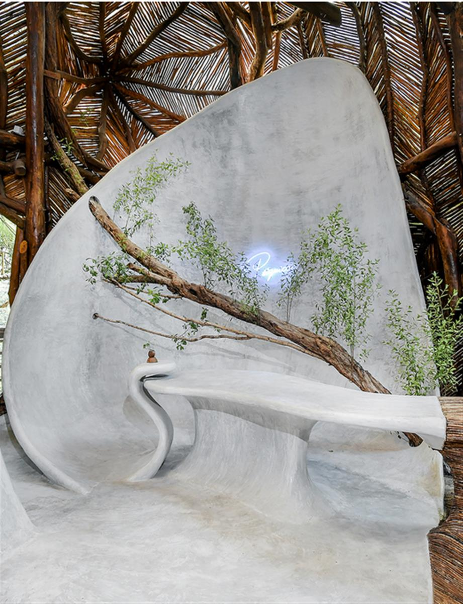
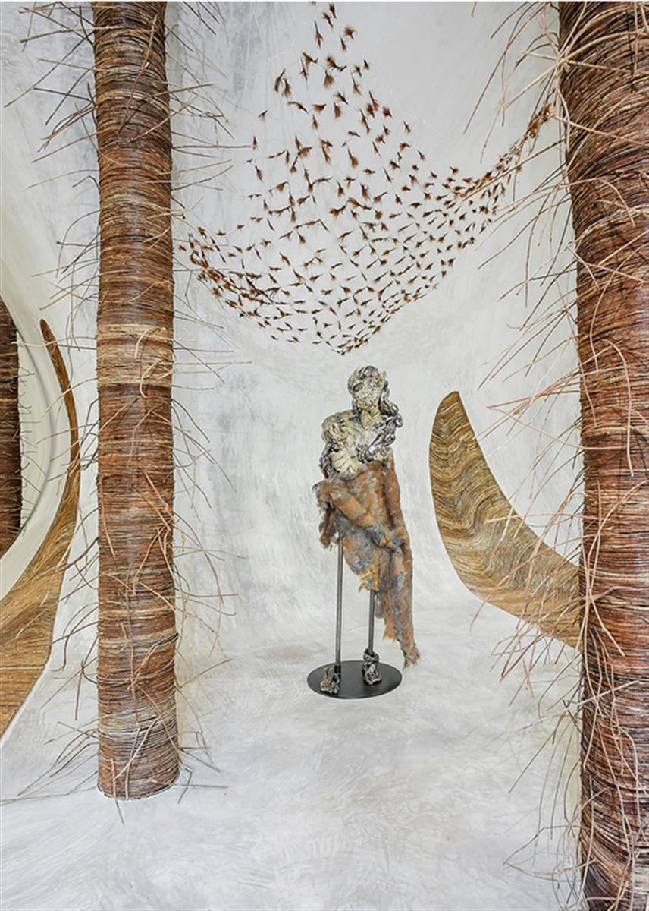
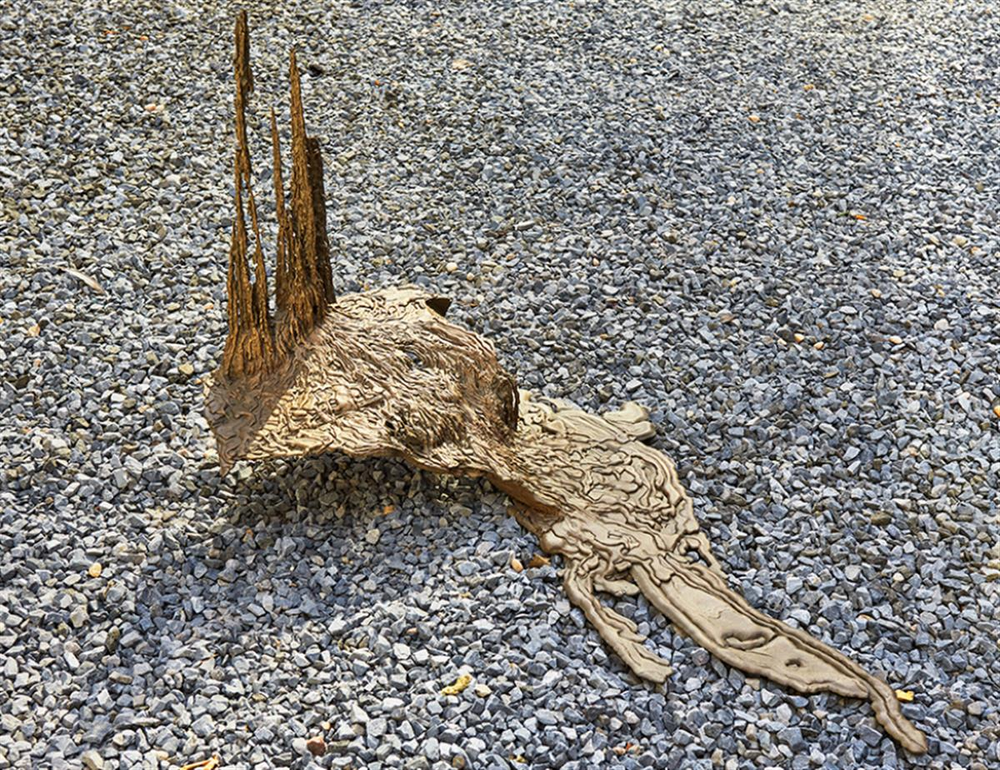
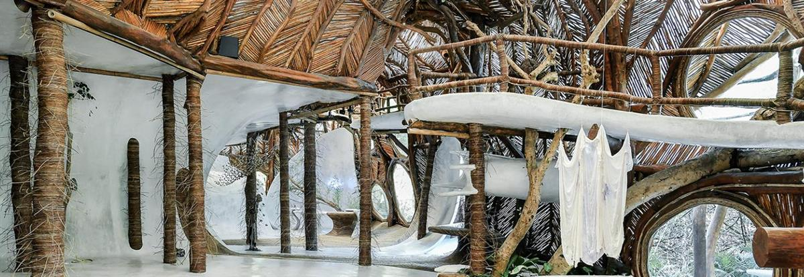

AZULIK from the sea. Courtesy: SFER IK; photograph: Nicolás Borgnino
AZULIK from the sea. Courtesy: SFER IK; photograph: Nicolás Borgnino
05 AUG 2019
At SFER IK in Tulum, Mexico, Mayan architecture and site-specific exhibitions propose a ‘return’ to nature
SOURCE: FRIEZE
A large beetle drops from the ceiling and lands on the reception desk with a thump. This is not an unusual occurrence at SFER IK, a gallery in Tulum, Mexico, where ‘Alchemistry’, an exhibition of sculpture and video by Kelly Akashi, Bianca Bondi and Rochelle Goldberg, is currently on view. Here, no one seems fazed by the crawling insects, lizards, snakes or raccoons that occasionally visit the space, more treehouse than white cube. SFER IK aims to bring fine art closer to nature – specifically, the dense jungle of the Yucatán – and its windows and skylights expose much of the work on display to the elements. Natural curves are a principal feature of this design; barefoot visitors walk over sloping floors alternately finished in concrete and swirling strips of dried bejuco vine.
Known previously as IK Lab, SFER IK is one component of a growing complex called Azulik: part luxury eco-resort, part art centre, founded and designed by Argentinian self-taught architect and naturalist guru Eduardo ‘Roth’ Neira. Its light-weight ferrocement structures wrap around preexisting trees so as not to disturb the lush landscape. The indigenous Mayan builders on Roth’s construction team used no blueprints or heavy machinery, in keeping with traditional techniques. A first exhibition space opened in spring 2018 on Azulik’s campus in Tulum, under the brief directorship of Santiago Rumney Guggenheim, showing works by blue chip artists such as Artur Lescher and Tatiana Trouvé; followed by a second space in the inland village of Francisco Uh May, inaugurated in November 2018.
As of June, the programme has shifted away from a commercial model toward what Roth and current Curator and Artistic Director Claudia Paetzold call a ‘museion’, after the Ancient Greek temples to the Muses. Its mission, they explain, is to form a ‘multidisciplinary creative sphere’ of conferences, workshops, and site-specific projects. These have included classes on ceramics and symposia on DIY solar panels and new uses for the surplus seaweed on Tulum’s beaches.

Bianca Bondi, Here Not Here (Psíquico), 2019, installation view. Courtesy: SFER IK
The strikingly unusual architecture of SFER IK invites site-specific installations. All three artists in ‘Alchemistry’ employ heavily manipulated or distressed materials – such as chunky cast metal and threadbare drapery – that appear to have been salvaged from a shipwreck. Bondi worked on-site over ten days, collecting materials from the jungle and nearby beaches; in her Ceremonial Gloves (Hands Bound) (2019), one oversized silk glove stuffed with ceiba nuts and crusted with glimmering salt lays dormant on the floor, while the other grips a bundle of discarded palm branches. A tourniquet of rubber-coated electrical wires splays out the fabric’s delicate weave: a permeable structure of protection.
Although mostly made in 2017 and previously exhibited, Goldberg and Akashi’s works have been transformed by this lush context. Goldberg’s Intralocutor, “Can You Make The Bad Good Again?”(2017) is a molten Greco-Roman nymph built up from ceramic coils, imprinted with synthetic snakeskin coated with graphite-coloured glaze and partially cloaked with felted human hair. She is canopied by Swarm (2017), a grid of clear plastic tubing that holds aloft a thatch of brown feathers.

Rochelle Goldberg, ‘Can You Make the Bad Good Again?’, 2017, installation view. Courtesy: SFER IK
Big Drip (2017) reveals Akashi’s interest in entropy. Thick bronze rivulets appear to pour from an unseen cauldron and pool like magma on the ground. The sculpture slyly references the bronze ‘lost wax’ process by meticulously casting the material meant to melt away during casting. Meanwhile, Akashi’s new time-lapse video, Shells (2019), tracks over cross-sectioned shells to display their elegant geometries. The work falls flat in a space that mimics shell curvatures on a grand scale; it feels at once both too obvious and too spare.
SFER IK aims to seamlessly integrate an arts institution with nature, yet Goldberg’s question rings in my ears. Can you make the bad good again? Can we re-centre natural forces within a culture that has historically perceived them as an existential threat – or a source for exploitation? Even the tropical beetle browsing the gallery could be seen as a hotel mascot, helping sell ‘jungle living’ to hotel guests for upwards of US$1000 a night. SFER IK depends on Azulik’s revenue – and Roth’s personal wealth – for its budget, tying its conceptual aims to eco-tourism, which is designed to promote conservation efforts. Paetzold argues that Azulik attracts visitors who are respectful of nature and may share their insights on sustainability after they leave. Roth’s celebration of the Mayan view of nature as integral to human culture is admirable, although none of SFER IK’s management self-identify as indigenous.

Kelly Akashi, Big Drip, 2016–17, bronze, 71.1 × 147.3 × 114.3 cm. Courtesy: SFER IK
It may seem counterintuitive to venture into the wild to see works by artists from New York, Los Angeles and Paris. As an exhibition, though, ‘Alchemistry’ is a success. The artists hold their own within the gallery’s sublime architecture because their works embrace a kind of dark materialism that hints at the profound threat of climate change to life as we know it.

‘Alchemistry’ continues at SFER IK through 30 September 2019.
Vanessa Thill is an artist, writer and curator who lives in New York, USA.
SOURCE: FRIEZE
GALLERY: SFER IK